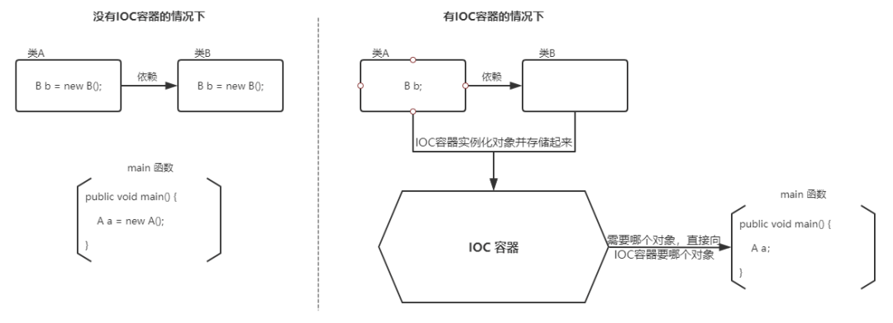

1 Spring 基础
什么是 Spring 框架?
Spring 是一款开源的轻量级 Java 开发框架，旨在提高开发人员的开发效率以及系统的可维护性。
一般说 Spring 框架指的都是 Spring Framework，它是很多模块的集合，使用这些模块可以很方便地协助我们进行开发，比如说 Spring 支持 IoC（Inverse of Control:控制反转） 和 AOP (Aspect-Oriented Programming:面向切面编程)、可以很方便地对数据库进行访问、可以很方便地集成第三方组件（电子邮件，任务，调度，缓存等等）、对单元测试支持比较好、支持 RESTful Java 应用程序的开发。
Spring 包含的模块有哪些？

Spring 各个模块的依赖关系如下：

Core Container：Spring 框架的核心模块，也可以说是基础模块，主要提供 IoC 依赖注入功能的支持，Spring 其他所有的功能基本都需要依赖于该模块
- spring-core ：Spring 框架基本的核心工具类。
- spring-beans ：提供对 bean 的创建、配置和管理等功能的支持。
- spring-context ：提供对国际化、事件传播、资源加载等功能的支持。
- spring-expression ：提供对表达式语言（Spring Expression Language） SpEL 的支持，只依赖于 core 模块，不依赖于其他模块，可以单独使用。
AOP
- spring-aspects ：该模块为与 AspectJ 的集成提供支持。
- spring-aop ：提供了面向切面的编程实现。
- spring-instrument ：提供了为 JVM 添加代理（agent）的功能。 具体来讲，它为Tomcat 提供了一个织入代理，能够为 Tomcat 传递类文件，就像这些文件是被类加载器加载的一样，这个模块的使用场景非常有限。
Data Access/Integration
- spring-jdbc ：提供了对数据库访问的抽象 JDBC。不同的数据库都有自己独立的 API 用于操作数据库，而 Java 程序只需要和 JDBC API 交互，这样就屏蔽了数据库的影响。
- spring-tx ：提供对事务的支持。
- spring-orm ： 提供对 Hibernate、JPA 、iBatis 等 ORM 框架的支持。
- spring-oxm ：提供一个抽象层支撑 OXM(Object-to-XML-Mapping)，例如：JAXB、Castor、XMLBeans、JiBX 和 XStream 等。
- spring-jms : 消息服务。自 Spring Framework 4.1 以后，它还提供了对 spring-messaging 模块的继承。
Spring Web
- spring-web ：对 Web 功能的实现提供一些最基础的支持。
- spring-webmvc ： 提供对 Spring MVC 的实现。
- spring-websocket ： 提供了对 WebSocket 的支持，WebSocket 可以让客户端和服务端进行双向通信。
- spring-webflux ：提供对 WebFlux 的支持。WebFlux 是 Spring Framework 5.0 中引入的新的响应式框架。与 Spring MVC 不同，它不需要 Servlet API，是完全异步。
Messaging
- spring-messaging 是从 Spring4.0 开始新加入的一个模块，主要职责是为 Spring 框架集成一些基础的报文传送应用。
Spring Test
- Spring 团队提倡测试驱动开发（TDD）。有了控制反转 (IoC)的帮助，单元测试和集成测试变得更简单。
- Spring 的测试模块对 JUnit（单元测试框架）、TestNG（类似 JUnit）、Mockito（主要用来 Mock 对象）、PowerMock（解决 Mockito 的问题比如无法模拟 final, static， private 方法）等等常用的测试框架支持的都比较好。
Spring,Spring MVC,Spring Boot 之间什么关系?
Spring 包含了多个功能模块（上面刚刚提高过），其中最重要的是 Spring-Core（主要提供 IoC 依赖注入功能的支持） 模块， Spring 中的其他模块（比如 Spring MVC）的功能实现基本都需要依赖于该模块。
Spring MVC 是 Spring 中的一个很重要的模块，主要赋予 Spring 快速构建 MVC 架构的 Web 程序的能力。MVC 是模型(Model)、视图(View)、控制器(Controller)的简写，其核心思想是通过将业务逻辑、数据、显示分离来组织代码。
使用 Spring 进行开发时各种配置过于麻烦，比如开启某些 Spring 特性时，需要用 XML 或 Java 配置文件进行显式配置。于是，Spring Boot 诞生了！Spring 旨在简化 J2EE 企业应用程序开发。Spring Boot 旨在简化 Spring 开发（减少配置文件，开箱即用！）。
Spring Boot 只是简化了配置，如果你需要构建 MVC 架构的 Web 程序，你还是需要使用 Spring MVC 作为 MVC 框架，只是说 Spring Boot 帮你简化了 Spring MVC 的很多配置，不用再写xml或配置类，直接添加注解就可以使用，真正做到开箱即用！
2 Spring IoC
谈谈自己对于 Spring IoC 的了解
IoC（Inverse of Control:控制反转） 是一种设计思想，而不是一个具体的技术实现。IoC 的思想就是将原本在程序中手动创建对象的控制权，交由 Spring 框架来管理。不过， IoC 并非 Spring 特有，在其他语言中也有应用。
为什么叫控制反转？
- 控制 ：指的是对象创建（实例化、管理）的权力
- 反转 ：控制权交给外部环境（Spring 框架、IoC 容器）

将对象之间的相互依赖关系交给 IoC 容器来管理，并由 IoC 容器完成对象的注入，这样可以很大程度上简化应用的开发，把应用从复杂的依赖关系中解放出来。
IoC 容器就像是一个工厂一样，当我们需要创建一个对象的时候，只需要配置好配置文件/注解即可，完全不用考虑对象是何时如何被创建出来的。
比如在实际项目中一个 Service 类可能依赖了很多其他的类，假如我们需要实例化这个 Service，你可能要每次都要搞清这个 Service 所有底层类的构造函数，这可能会把人逼疯。如果利用 IoC 的话，你只需要配置好，然后在需要的地方引用就行了，这大大增加了项目的可维护性且降低了开发难度。
在 Spring 中， IoC 容器是 Spring 用来实现 IoC 的载体， IoC 容器实际上就是个 Map（key，value），Map 中存放的是各种对象。Spring 时代我们一般通过 XML 文件来配置 Bean，后来开发人员觉得 XML 文件来配置不太好，于是 SpringBoot 注解配置就慢慢开始流行起来。
什么是 Spring Bean？
简单来说，Bean 代指的就是那些被 IoC 容器所管理的对象。
我们需要告诉 IoC 容器帮助我们管理哪些对象，这个是通过配置元数据来定义的。配置元数据可以是 XML 文件、注解或者 Java 配置类。
将一个类声明为 Bean 的注解有哪些?
- @Component ：通用的注解，可标注任意类为 Spring 组件。如果一个 Bean 不知道属于哪个层，可以使用 @Component 注解标注。
- @Repository : 对应持久层即 Dao 层，主要用于数据库相关操作。
- @Service : 对应服务层，主要涉及一些复杂的逻辑，需要用到 Dao 层。
- @Controller : 对应 Spring MVC 控制层，主要负责接受用户请求并调用 Service 层返回数据给前端页面。
@Component 和 @Bean 的区别是什么?
两者的目的是一样的，都是注册bean到Spring容器中。
- @Component 注解作用于类；而@Bean注解作用于方法。
- @Component 注解表明一个类会作为组件类，并告知Spring要为这个类创建bean；@Bean注解告诉Spring这个方法将会返回一个对象，这个对象要注册为Spring应用上下文中的bean。通常方法体中包含了最终产生bean实例的逻辑。
- @Component（@Controller、@Service、@Repository）通常是通过类路径扫描来自动侦测以及自动装配到Spring容器中；@Bean注解通常是我们在标有该注解的方法中定义产生这个bean的逻辑，因此Bean比Component的自定义性更强。可以实现一些Component实现不了的自定义加载类。
@Bean 注解使用示例：
@Configuration
public class AppConfig {
@Bean
public TransferService transferService() {
return new TransferServiceImpl();
}
}
// 下面这个例子是通过 @Component 无法实现的。
@Bean
public OneService getService(status) {
case (status) {
when 1:
return new serviceImpl1();
when 2:
return new serviceImpl2();
when 3:
return new serviceImpl3();
}
}注入 Bean 的注解有哪些？
Spring 内置的 @Autowired 以及 JDK 内置的 @Resource 和 @Inject 都可以用于注入 Bean。
@Autowired 和 @Resource 的区别是什么？
Autowired 属于 Spring 内置的注解，默认的注入方式为byType（根据类型进行匹配），也就是说会优先根据接口类型去匹配并注入 Bean （接口的实现类）。
这会有什么问题呢？ 当一个接口存在多个实现类的话，byType这种方式就无法正确注入对象了，因为这个时候 Spring 会同时找到多个满足条件的选择，默认情况下它自己不知道选择哪一个。
这种情况下，注入方式会变为 byName（根据名称进行匹配），这个名称通常就是类名（首字母小写）。建议通过 @Qualifier 注解来显示指定名称而不是依赖变量的名称自动寻找对应的类名（@Qualifier 必须和 @Autowired搭配使用）。
// smsService 就是我们上面所说的名称
@Autowired
private SmsService smsService;
// 报错，byName 和 byType 都无法匹配到 bean
@Autowired
private SmsService smsService;
// 正确注入 SmsServiceImpl1 对象对应的 bean
@Autowired
private SmsService smsServiceImpl1;
// 正确注入 SmsServiceImpl1 对象对应的 bean
// smsServiceImpl1 就是我们上面所说的名称
@Autowired
@Qualifier(value = "smsServiceImpl1")
private SmsService smsService;@Resource属于 JDK 提供的注解，默认注入方式为 byName。如果无法通过名称匹配到对应的 Bean 的话，注入方式会变为byType。
@Resource 有两个比较重要且日常开发常用的属性：name（名称）、type（类型）。如果仅指定 name 属性则注入方式为byName，如果仅指定type属性则注入方式为byType，如果同时指定name 和type属性（不建议这么做）则注入方式为byType + byName。
// 报错，byName 和 byType 都无法匹配到 bean
@Resource
private SmsService smsService;
// 正确注入 SmsServiceImpl1 对象对应的 bean
@Resource
private SmsService smsServiceImpl1;
// 正确注入 SmsServiceImpl1 对象对应的 bean（比较推荐这种方式）
@Resource(name = "smsServiceImpl1")
private SmsService smsService;总结：
- @Autowired 是 Spring 提供的注解，@Resource 是 JDK 提供的注解。
- @Autowired 默认的注入方式为byType（根据类型进行匹配），@Resource默认注入方式为 byName（根据名称进行匹配）。
- 当一个接口存在多个实现类的情况下，@Autowired 和 @Resource 都需要通过名称才能正确匹配到对应的 Bean。
- @Autowired 可以通过 @Qualifier 注解来显示指定名称；@Resource可以通过 name 属性来显式指定名称。
Bean 的作用域有哪些?
- singleton : IoC 容器中只有唯一的 bean 实例。Spring 中的 bean 默认都是单例的，是对单例设计模式的应用。
- prototype : 每次获取都会创建一个新的 bean 实例。也就是说，连续 getBean() 两次，得到的是不同的 Bean 实例。
还有一种是按照Web应用的作用域来区分：
- request （仅 Web 应用可用）: 每一次 HTTP 请求都会产生一个新的 bean（请求 bean），该 bean 仅在当前 HTTP request 内有效。
- session （仅 Web 应用可用） : 每一次来自新 session 的 HTTP 请求都会产生一个新的 bean（会话 bean），该 bean 仅在当前 HTTP session 内有效。
- application/global-session （仅 Web 应用可用）： 每个 Web 应用在启动时创建一个 Bean（应用 Bean），，该 bean 仅在当前应用启动时间内有效。
- websocket （仅 Web 应用可用）：每一次 WebSocket 会话产生一个新的 bean。
如何配置 bean 的作用域呢？
xml 方式：
<bean id="..." class="..." scope="singleton"></bean>注解方式：
@Bean
@Scope(value = ConfigurableBeanFactory.SCOPE_PROTOTYPE)
public Person personPrototype() {
return new Person();
}单例 Bean 的线程安全问题了解吗？
单例 Bean 存在线程问题，主要是因为当多个线程操作同一个对象的时候是存在资源竞争的。
常见的有两种解决办法：
- 在 Bean 中尽量避免定义可变的成员变量。
- 在类中定义一个 ThreadLocal 成员变量，将需要的可变成员变量保存在 ThreadLocal 中（推荐的一种方式）。
不过，大部分 Bean 实际都是无状态（没有实例变量）的（比如 Dao、Service），这种情况下， Bean 是线程安全的。
Bean 的生命周期了解么?
Bean 的生命周期概括起来就是 4 个阶段：
- 实例化（Instantiation）
- 属性赋值（Populate）
- 初始化（Initialization）
- 销毁（Destruction）
实例化：
- Bean 容器找到配置文件中 Spring Bean 的定义，然后 Bean 容器利用 Java Reflection API 创建一个 Bean 的实例。
属性赋值：
- 如果涉及到一些属性值 利用 set()方法设置一些属性值。
初始化：
- 如果 Bean 实现了 BeanNameAware 接口，调用 setBeanName()方法，传入 Bean 的名字；如果 Bean 实现了 BeanClassLoaderAware 接口，调用 setBeanClassLoader()方法，传入 ClassLoader对象的实例；如果 Bean 实现了 BeanFactoryAware 接口，调用 setBeanFactory()方法，传入 BeanFactory对象的实例。此外如果实现了其他 *.Aware接口，就调用相应的方法。
- 如果有和加载这个 Bean 的 Spring 容器相关的 BeanPostProcessor 对象，执行postProcessBeforeInitialization() 方法。
- 如果 Bean 实现了InitializingBean接口，执行afterPropertiesSet()方法。
- 如果 Bean 在配置文件中的定义包含 init-method 属性，执行指定的方法。
- 如果有和加载这个 Bean 的 Spring 容器相关的 BeanPostProcessor 对象，执行postProcessAfterInitialization() 方法
销毁：
- 当要销毁 Bean 的时候，如果 Bean 实现了 DisposableBean 接口，执行 destroy() 方法。
- 当要销毁 Bean 的时候，如果 Bean 在配置文件中的定义包含 destroy-method 属性，执行指定的方法。
Bean 的依赖注入方式有哪些？
- 变量注入（Field Injection）
@Service
public class UserServiceImpl implements UserService {
@Autowired
private UserMapper userMapper;
//...
}优点：
- 注入方式简单，非常简洁，没有任何多余代码；
弊端：
- 注入对象不能用final修饰；
- 可能会导致循环依赖，启动的时候不会报错，在使用那个bean的时候才会报错；
- 对于IOC容器以外的环境，除了使用反射来提供它需要的依赖之外，无法复用该实现类。而且将一直是个潜在的隐患，因为你不调用将一直无法发现NullPointException的存在；
- 构造器注入（Constructor Injection）
@Service
public class UserServiceImpl implements UserService {
private final UserMapper userMapper;
@Autowired
public UserServiceImpl(UserMapper userMapper) {
this.userMapper = userMapper;
}
}优点：
- 显式注明必须强制注入，通过强制指明依赖注入来保证这个类的运行，防止NullPointerException；
- 注入对象可以使用final修饰；
- 非IOC容器环境也可使用new实例化该类的对象；
- 避免循环依赖，如果存在循环依赖，spring项目启动的时候就会报错；
弊端：
- 当你有十几个甚至更多对象需要注入时，构造函数的代码臃肿，看起来不太舒服；
- setter方法注入（Setter Injection）
@Service
public class UserServiceImpl implements UserService {
private UserMapper userMapper;
@Autowired
public void setUserMapper(UserMapper userMapper) {
this.userMapper = userMapper;
}
}优点：
- 依赖注入中使用的依赖是可选的，选择依赖的意思是注入的依赖是可以为 NULL；
- 允许在类构造完成后重新注入；
弊端：
- 注入对象不能使用final修饰；
总结：
- 如果注入的属性是必选的属性，则通过构造器注入；
- 如果注入的属性是可选的属性，则通过setter方法注入；
- 至于field注入，不建议使用；
出现两个ID相同的Bean怎么办？
首先，ID是Bean的唯一身份标识，在同一个XML配置文件里面，不能存在id相同的两个bean，否则spring容器启动的时候会报错，因为Spring在启动的时候会去验证id的唯一性，一旦发现重复就会报错。
但是在两个不同的Spring配置文件里面，可以存在id相同的两个bean。 IOC容器在加载Bean的时候，默认会多个相同id的bean进行覆盖。
在Spring3.x版本以后，这个问题发生了变化，Spring3.x里面提供@Configuration注解去声明一个配置类，然后使用@Bean注解实现Bean的声明，这种方式完全取代了XMl。
在这种情况下，如果我们在同一个配置类里面声明多个相同名字的bean，在Spring IOC容器中只会注册第一个声明的Bean的实例，后续重复名字的Bean就不会再注册了。
3 Spring AoP
谈谈自己对于 AOP 的了解
AOP (Aspect-Oriented Programming:面向切面编程) 能够将那些与业务无关，却为业务模块所共同调用的逻辑或责任（例如事务处理、日志管理、权限控制等）封装起来，便于减少系统的重复代码，降低模块间的耦合度，并有利于未来的可拓展性和可维护性。
Spring AOP 就是基于动态代理的，如果要代理的对象，实现了某个接口，那么 Spring AOP 会使用 JDK Proxy，去创建代理对象，而对于没有实现接口的对象，就无法使用 JDK Proxy 去进行代理了，这时候 Spring AOP 会使用 Cglib 生成一个被代理对象的子类来作为代理，如下图所示：

当然也可以使用 AspectJ ！Spring AOP 已经集成了 AspectJ ，AspectJ 应该算的上是 Java 生态系统中最完整的 AOP 框架了。
AOP 切面编程设计到的一些专业术语：
- 目标(Target)：被通知的对象
- 代理(Proxy)：向目标对象应用通知之后创建的代理对象
- 连接点(JoinPoint)：目标对象的所属类中，定义的所有方法均为连接点
- 切入点(Pointcut)：被切面拦截 / 增强的连接点（切入点一定是连接点，连接点不一定是切入点）
- 通知(Advice)：增强的逻辑 / 代码，也即拦截到目标对象的连接点之后要做的事情
- 切面(Aspect)：切入点(Pointcut) + 通知(Advice)
- 织入(Weaving)：将通知应用到目标对象，进而生成代理对象的过程动作
Spring AOP 和 AspectJ AOP 有什么区别？
Spring AOP 属于运行时增强，而 AspectJ 是编译时增强。 Spring AOP 基于代理(Proxying)，而 AspectJ 基于字节码操作(Bytecode Manipulation)。
Spring AOP 已经集成了 AspectJ ，AspectJ 应该算的上是 Java 生态系统中最完整的 AOP 框架了。AspectJ 相比于 Spring AOP 功能更加强大，但是 Spring AOP 相对来说更简单，
如果我们的切面比较少，那么两者性能差异不大。但是，当切面太多的话，最好选择 AspectJ ，它比 Spring AOP 快很多。
AOP 定义的通知类型有哪些？
@Before（前置通知）：目标对象的方法调用之前触发
@After （后置通知）：目标对象的方法调用之后触发
@AfterReturning（返回通知）：目标对象的方法调用完成，在返回结果值之后触发
@AfterThrowing（异常通知） ：目标对象的方法运行中抛出 / 触发异常后触发
- @AfterReturning 和 @AfterThrowing 两者互斥。如果方法调用成功无异常，则会有返回值；如果方法抛出了异常，则不会有返回值。
@Around：（环绕通知）编程式控制目标对象的方法调用。环绕通知是所有通知类型中可操作范围最大的一种，因为它可以直接拿到目标对象，以及要执行的方法，所以环绕通知可以任意的在目标对象的方法调用前后搞事，甚至不调用目标对象的方法
多个切面的执行顺序如何控制？
- 通常使用@Order 注解直接定义切面顺序
// 值越小优先级越高
@Order(3)
@Component
@Aspect
public class LoggingAspect implements Ordered {- 实现Ordered 接口重写 getOrder 方法
@Component
@Aspect
public class LoggingAspect implements Ordered {
// ....
@Override
public int getOrder() {
// 返回值越小优先级越高
return 1;
}
}4 Spring MVC
说说自己对于 Spring MVC 了解
MVC 是模型(Model)、视图(View)、控制器(Controller)的简写，其核心思想是通过将业务逻辑、数据、显示分离来组织代码。
Model 1 时代：
- 在 Model1 模式下，整个 Web 应用几乎全部用 JSP 页面组成，只用少量的 JavaBean 来处理数据库连接、访问等操作。
- 这个模式下 JSP 即是控制层（Controller）又是表现层（View）。显而易见，这种模式存在很多问题。比如控制逻辑和表现逻辑混杂在一起，导致代码重用率极低；再比如前端和后端相互依赖，难以进行测试维护并且开发效率极低。
Model 2 时代：
- Model (Java Bean):系统涉及的数据，也就是 dao 和 bean。
- View (JSP)：展示模型中的数据，只是用来展示。
- Controller (Servlet)：处理用户请求都发送给 ，返回数据给 JSP 并展示给用户。
- Model2 模式下还存在很多问题，Model2 的抽象和封装程度还远远不够，使用 Model2 进行开发时不可避免地会重复造轮子，这就大大降低了程序的可维护性和复用性。
Spring MVC 时代：
- 随着 Spring 轻量级开发框架的流行，Spring 生态圈出现了 Spring MVC 框架， Spring MVC 是当前最优秀的 MVC 框架。相比于 Struts2 ， Spring MVC 使用更加简单和方便，开发效率更高，并且 Spring MVC 运行速度更快。
- Spring MVC 是一款很优秀的 MVC 框架。Spring MVC 可以帮助我们进行更简洁的 Web 层的开发，并且它天生与 Spring 框架集成。Spring MVC 下我们一般把后端项目分为 Service 层（处理业务）、Dao 层（数据库操作）、Entity 层（实体类）、Controller 层(控制层，返回数据给前台页面)。
Spring MVC 的核心组件有哪些？
- DispatcherServlet ：核心的中央处理器，负责接收请求、分发，并给予客户端响应。
- HandlerMapping ：处理器映射器，根据 uri 去匹配查找能处理的 Handler ，并会将请求涉及到的拦截器和 Handler 一起封装。
- HandlerAdapter ：处理器适配器，根据 HandlerMapping 找到的 Handler ，适配执行对应的 Handler。
- Handler ：请求处理器，处理实际请求的处理器。
- ViewResolver ：视图解析器，根据 Handler 返回的逻辑视图 / 视图，解析并渲染真正的视图，并传递给 DispatcherServlet 响应客户端。
SpringMVC 工作原理了解吗?

- 客户端（浏览器）发送请求， DispatcherServlet拦截请求。
- DispatcherServlet 根据请求信息调用 HandlerMapping 。HandlerMapping 根据 uri 去匹配查找能处理的 Handler（也就是我们平常说的 Controller 控制器） ，并会将请求涉及到的拦截器和 Handler 一起封装。
- DispatcherServlet 调用 HandlerAdapter适配执行 Handler 。
- Handler 完成对用户请求的处理后，会返回一个 ModelAndView 对象给DispatcherServlet，ModelAndView 顾名思义，包含了数据模型以及相应的视图的信息。Model 是返回的数据对象，View 是个逻辑上的 View。
- ViewResolver 会根据逻辑 View 查找实际的 View。
- DispaterServlet 把返回的 Model 传给 View（视图渲染）。
- 把 View 返回给请求者（浏览器）。
常用注解及其作用
@ResponseBody
注解 @ResponseBody，使用在控制层（controller）的方法上，作用是将方法的返回值，以特定的格式写入到response的body区域，进而将数据返回给客户端：
- 如果返回值是字符串，那么直接将字符串写到客户端；
- 如果是一个对象，会将对象转化为json串，然后写到客户端。
当方法上面没有写ResponseBody,底层会将方法的返回值封装为ModelAndView对象。
@RestController
@RestController是@ResponseBody和@Controller的组合注解。
@RequestMapping
@RequestMapping 可以用在控制器的某个方法上，也可以作用在此控制器类上，通过属性值配置当前controller的url映射。
当作用在类上时，类中的控制器方法可以通过注解轻松实现RESTful架构：
- @GetMapping：处理 Get 请求
- @PostMapping：处理 Post 请求
- @PutMapping：用于更新资源
- @DeleteMapping：处理删除请求
- @PatchMapping：用于更新部分资源
统一异常处理怎么做？
推荐使用注解的方式统一异常处理，具体会使用到 @ControllerAdvice + @ExceptionHandler 这两个注解。
@ControllerAdvice
@ResponseBody
public class GlobalExceptionHandler {
@ExceptionHandler(BaseException.class)
public ResponseEntity<?> handleAppException(BaseException ex, HttpServletRequest request) {
//......
}
@ExceptionHandler(value = ResourceNotFoundException.class)
public ResponseEntity<ErrorReponse> handleResourceNotFoundException(ResourceNotFoundException ex, HttpServletRequest request) {
//......
}
}这种异常处理方式下，会给所有或者指定的 Controller 织入异常处理的逻辑（AOP），当 Controller 中的方法抛出异常的时候，由被@ExceptionHandler 注解修饰的方法进行处理。
ExceptionHandlerMethodResolver 中 getMappedMethod 方法决定了异常具体被哪个被 @ExceptionHandler 注解修饰的方法处理异常。
@Nullable
private Method getMappedMethod(Class<? extends Throwable> exceptionType) {
List<Class<? extends Throwable>> matches = new ArrayList<>();
//找到可以处理的所有异常信息。mappedMethods 中存放了异常和处理异常的方法的对应关系
for (Class<? extends Throwable> mappedException : this.mappedMethods.keySet()) {
if (mappedException.isAssignableFrom(exceptionType)) {
matches.add(mappedException);
}
}
// 不为空说明有方法处理异常
if (!matches.isEmpty()) {
// 按照匹配程度从小到大排序
matches.sort(new ExceptionDepthComparator(exceptionType));
// 返回处理异常的方法
return this.mappedMethods.get(matches.get(0));
}
else {
return null;
}
}从源代码看出： getMappedMethod()会首先找到可以匹配处理异常的所有方法信息，然后对其进行从小到大的排序，最后取最小的那一个匹配的方法(即匹配度最高的那个)。
5 设计模式
- 工厂设计模式 : Spring 使用工厂模式通过 BeanFactory、ApplicationContext 创建 bean 对象。
- 代理设计模式 : Spring AOP 功能的实现。
- 单例设计模式 : Spring 中的 Bean 默认都是单例的。
- 模板方法模式 : Spring 中 jdbcTemplate、hibernateTemplate 等以 Template结尾的对数据库操作的类，它们就使用到了模板模式。
- 包装器设计模式 : 我们的项目需要连接多个数据库，而且不同的客户在每次访问中根据需要会去访问不同的数据库。这种模式让我们可以根据客户的需求能够动态切换不同的数据源。
- 观察者模式: Spring 事件驱动模型就是观察者模式很经典的一个应用。
- 适配器模式 : Spring AOP 的增强或通知(Advice)使用到了适配器模式、spring MVC 中也是用到了适配器模式适配Controller。
……
6 Spring 事务
Spring 管理事务的方式有几种？
- 编程式事务 ： 在代码中硬编码(不推荐使用) : 通过 TransactionTemplate或者 TransactionManager 手动管理事务，实际应用中很少使用，但是对于你理解 Spring 事务管理原理有帮助。
- 声明式事务 ： 在 XML 配置文件中配置或者直接基于注解（推荐使用），实际是通过 AOP 实现（基于 @Transactional 的全注解方式使用最多）。
Spring 事务中哪几种事务传播行为?
Spring 对事务的控制，是使用 aop 切面实现的，我们不用关心事务的开始，提交 ，回滚，只需要在方法上加 @Transactional 注解，这时候就有问题了:
- 场景一： serviceA 方法调用了 serviceB 方法，但两个方法都有事务，这个时候如果 serviceB 方法异常，是让 serviceB 方法提交，还是两个一起回滚。
- 场景二：serviceA 方法调用了 serviceB 方法，但是只有 serviceA 方法加了事务，是否把 serviceB 也加入 serviceA 的事务，如果 serviceB 异常，是否回滚 serviceA 。
- 场景三：serviceA 方法调用了 serviceB 方法，两者都有事务，serviceB 已经正常执行完，但 serviceA 异常，是否需要回滚 serviceB 的数据。
下面的类型都是针对于被调用方法来说的，理解起来要想象成两个 service 方法的调用才可以：
PROPAGATION_REQUIRED(默认)
- 支持当前事务，如果当前没有事务，则新建事务
- 如果当前存在事务，则加入当前事务，合并成一个事务
REQUIRES_NEW
- 新建事务，如果当前存在事务，则把当前事务挂起
- 这个方法会独立提交事务，不受调用者的事务影响，父级异常，它也是正常提交
NESTED
- 如果当前存在事务，它将会成为父级事务的一个子事务，方法结束后并没有提交，只有等父事务结束才提交
- 如果当前没有事务，则新建事务
- 如果它异常，父级可以捕获它的异常而不进行回滚，正常提交
- 但如果父级异常，它必然回滚，这就是和 REQUIRES_NEW 的区别
SUPPORTS
- 如果当前存在事务，则加入事务
- 如果当前不存在事务，则以非事务方式运行，这个和不写没区别
NOT_SUPPORTED
- 以非事务方式运行
- 如果当前存在事务，则把当前事务挂起
MANDATORY
- 如果当前存在事务，则运行在当前事务中
- 如果当前无事务，则抛出异常，也即父级方法必须有事务
NEVER
- 以非事务方式运行，如果当前存在事务，则抛出异常，即父级方法必须无事务
一般用得比较多的是 PROPAGATION_REQUIRED，REQUIRES_NEW。
Spring 事务中的隔离级别有哪几种?
和事务传播行为这块一样，为了方便使用，Spring 也相应地定义了一个枚举类：Isolation
TransactionDefinition.ISOLATION_DEFAULT: 使用后端数据库默认的隔离级别，MySQL 默认采用的REPEATABLE_READ隔离级别 Oracle 默认采用的READ_COMMITTED隔离级别.TransactionDefinition.ISOLATION_READ_UNCOMMITTED: 最低的隔离级别，使用这个隔离级别很少，因为它允许读取尚未提交的数据变更，可能会导致脏读、幻读或不可重复读TransactionDefinition.ISOLATION_READ_COMMITTED: 允许读取并发事务已经提交的数据，可以阻止脏读，但是幻读或不可重复读仍有可能发生TransactionDefinition.ISOLATION_REPEATABLE_READ: 对同一字段的多次读取结果都是一致的，除非数据是被本身事务自己所修改，可以阻止脏读和不可重复读，但幻读仍有可能发生。TransactionDefinition.ISOLATION_SERIALIZABLE: 最高的隔离级别，完全服从 ACID 的隔离级别。所有的事务依次逐个执行，这样事务之间就完全不可能产生干扰，也就是说，该级别可以防止脏读、不可重复读以及幻读。但是这将严重影响程序的性能。通常情况下也不会用到该级别。
@Transactional(rollbackFor = Exception.class)注解了解吗？
Exception 分为运行时异常 RuntimeException 和非运行时异常。事务管理对于企业应用来说是至关重要的，即使出现异常情况，它也可以保证数据的一致性。
当 @Transactional 注解作用于类上时，该类的所有 public 方法将都具有该类型的事务属性，同时，我们也可以在方法级别使用该标注来覆盖类级别的定义。如果类或者方法加了这个注解，那么这个类里面的方法抛出异常，就会回滚，数据库里面的数据也会回滚。
在 @Transactional 注解中如果不配置rollbackFor属性,那么事务只会在遇到RuntimeException的时候才会回滚，加上 rollbackFor=Exception.class,可以让事务在遇到非运行时异常时也回滚。
8 Spring Boot
什么是SpringBoot？
Spring Boot 是 Spring 开源组织下的子项目，是 Spring 组件一站式解决方案，主要是简化了使用 Spring 的难度，简省了繁重的配置，提供了各种启动器，开发者能快速上手。
为什么使用SpringBoot？
- 独立运行：Spring Boot 而且内嵌了各种 servlet 容器，Tomcat、Jetty 等，现在不再需要打成war 包部署到容器中，Spring Boot 只要打成一个可执行的 jar 包就能独立运行，所有的依赖包都在一个 jar 包内。
- 简化配置：spring-boot-starter-web 启动器自动依赖其他组件，简少了 maven 的配置。
- 自动配置：Spring Boot 能根据当前类路径下的类、jar 包来自动配置 bean，如添加一个 springboot-starter-web 启动器就能拥有 web 的功能，无需其他配置。
- 无代码生成和XML配置：Spring Boot 配置过程中无代码生成，也无需 XML 配置文件就能完成所有配置工作，这一切都是借助于条件注解完成的，这也是 Spring4.x 的核心功能之一。
- 应用监控：Spring Boot 提供一系列端点可以监控服务及应用，做健康检测。
SpringBoot自动配置的原理?
SpringBoot启动的时候通过 @EnableAutoConfiguration 注解找到 META-INF/spring.factories 配置文件中所有的自动配置类，并对其进行加载。
这些自动配置类的类名都是以AutoConfiguration结尾来命名的，它实际上就是一个 javaConfig 形式的 Spring 容器配置类，它们都有一个 @EnableConfigurationPerperties 的注解，通过这个注解启动XXXProperties命名的类去加载全局配置中的属性，如server.port，而 XXXProperties 通过@ConfigurationProperties注解将全局配置文件中的属性与自己的属性进行绑定。
SpringBoot的四大核心组件
四大组件分别是：starter， autoconfigure, CLI 以及actuator。
- Spring Boot Starter：Starter 帮我们封装好了所有需要的依赖,避免我们自己添加导致的一些Jar包冲突或者缺少包的情况；我们自动注入了需要的Bean实例到Spring 容器中，不需要我们手动配置（实际上是autoconfigure干的）。
- Spring Boot Autoconfigure：autoconfigure在我们的开发中并不会被感知，因为它是存在于starter中的，即每个starter都是依赖autoconfigure的，autoconfigure内容是配置Bean实例到Spring容器的实际代码实现包，然后提供给starter依赖。所以说上面所说的配置Bean实例到Spring容器中实际是autoconfigure做的。
- Spring Boot CLI：命令行使用Spring Boot的客户端工具；主要功能是运行groovy脚本，打包groovy文件到jar，初始化Spring Boot项目，可以命令行直接执行groovy脚本。
- Spring Boot actuator：监控插件，本身提供了很多接口可以获取当前项目的各项运行状态指标。
SpringBoot的核心注解是哪些？由哪几个注解组成的？
启动类上面的注解是@SpringBootApplication，他也是SpringBoot的核心注解，主要组合包含了以下3个注解：
- @SpringBootConfiguration：继承自@Configuration，二者功能也一致，标注当前类是配置类，并会将当前类内声明的一个或多个以 @Bean 注解标记的方法的实例纳入到 Spring 容器中，并且实例名就是方法名。
- @EnableAutoConfiguration：打开自动配置的功能，也可以关闭某个自动配置的选项，如关闭数据源自动配置的功能：@SpringBootApplication(exclude={DataSourceAutoConfiguration.class})； 本质是借助 @Import 的帮助，将所有符合自动配置条件的bean定义加载到Ioc容器。
- @ComponentScan：Spring自动扫描注解，用于自动扫描并加载被@Component和@Repository等注解修饰的组件或者@Bean。它会将他们加载到Spring的IoC容器中，以供后面的使用。可以通过basePackages属性来制定扫描的包，如果不指定则扫描该注解所在类的package。
SpringBoot的核心配置文件有哪几个？区别是什么？
SpringBoot的核心配置文件是application和bootstrap配置文件。
application配置文件这个容易理解，主要用于Spring Boot项目的自动化配置。
bootstrap配置文件有以下几个应用场景：
- 使用Spring Cloud Config配置中心时，这时需要在bootstrap配置文件中添加连接到配置中心的配置属性来加载外部配置中心的配置信息
- 一些固定的不能被覆盖的属性
- 一些加密/解密的场景
什么是Spring Boot Starter？有哪些常用的？
和自动配置一样，Spring Boot Starter的目的也是简化配置，而Spring Boot Starter解决的是依赖管理配置复杂的问题，有了它，当我需要构建一个Web应用程序时，不必再遍历所有的依赖包，一个一个地添加到项目的依赖管理中，而是只需要一个配置spring-boot-starter-web。
Spring Boot 也提供了其它的启动器项目包括，包括用于开发特定类型应用程序的典型依赖项：
- spring-boot-starter-web-services - SOAP Web Services
- spring-boot-starter-web - Web 和 RESTful 应用程序
- spring-boot-starter-test - 单元测试和集成测试
- spring-boot-starter-jdbc - 传统的 JDBC
- spring-boot-starter-hateoas - 为服务添加 HATEOAS 功能
- spring-boot-starter-security - 使用 SpringSecurity 进行身份验证和授权
- spring-boot-starter-data-jpa - 带有 Hibernate 的 Spring Data JPA
- spring-boot-starter-data-rest - 使用 Spring Data REST 公布简单的 REST 服务
spring-boot-starter-parent有什么作用？
新建一个SpringBoot项目，默认都是有parent的，这个parent就是spring-boot-starter-parent，spring-boot-starter-parent主要有如下作用：
- 定义了Java编译版本
- 使用UTF-8格式编码
- 继承自spring-boor-dependencies，这里面定义了依赖的版本，也正是因为继承了这个依赖，所以我们在写依赖时才不需要写版本号
- 执行打包操作的配置
- 自动化的资源过滤
- 自动化的插件配置
如何自定义Spring Boot Starter？
- 实现功能
- 添加Properties
@Data
@ConfigurationProperties(prefix = "com.pdai")
public class DemoProperties {
private String version;
private String name;
}- 添加AutoConfiguration
@Configuration
@EnableConfigurationProperties(DemoProperties.class)
public class DemoAutoConfiguration {
@Bean
public com.pdai.demo.module.DemoModule demoModule(DemoProperties properties){
com.pdai.demo.module.DemoModule demoModule = new com.pdai.demo.module.DemoModule();
demoModule.setName(properties.getName());
demoModule.setVersion(properties.getVersion());
return demoModule;
}
}- 添加spring.factory：在META-INF下创建spring.factory文件
org.springframework.boot.autoconfigure.EnableAutoConfiguration=\
com.pdai.demospringbootstarter.DemoAutoConfiguration- install
为什么需要spring-boot-maven-plugin？
spring-boot-maven-plugin提供了一些像jar一样打包或者运行应用程序的命令：
- spring-boot:run 运行SpringBoot应用程序
- spring-boot:repackage 重新打包你的jar包或者是war包使其可执行
- spring-boot:start 和 spring-boot:stop 管理Spring Boot应用程序的生命周期
- spring-boot:build-info 生成执行器可以使用的构造信息
SpringBoot 打成jar和普通的jar有什么区别？
Spring Boot 项目最终打包成的 jar 是可执行 jar，这种 jar 可以直接通过java -jar xxx.jar命令来运行，但这种 jar 不可以作为普通的 jar 被其他项目依赖，即使依赖了也无法使用其中的类。
Spring Boot 的 jar 无法被其他项目依赖，主要还是他和普通 jar 的结构不同。普通的 jar 包，解压后直接就是包名，包里就是我们的代码，而 Spring Boot 打包成的可执行 jar 解压后，在 \BOOT-INF\classes 目录下才是我们的代码，因此无法被直接引用。如果非要引用，可以在 pom.xml 文件中增加配置，将 Spring Boot 项目打包成两个 jar ，一个可执行，一个可引用。
如何使用Spring Boot实现异常处理？
Spring提供了一种使用ControllerAdvice处理异常的非常有用的方法。通过实现一个ControlerAdvice类，来处理控制类抛出的所有异常。
SpringBoot 实现热部署有哪几种方式？
- Spring Loaded
- Spring-boot-devtools
Spring Boot中的监视器是什么？
Spring boot actuator是spring启动框架中的重要功能之一。Spring boot监视器可帮助您访问生产环境中正在运行的应用程序的当前状态。
有几个指标必须在生产环境中进行检查和监控。即使一些外部应用程序可能正在使用这些服务来向相关人员触发警报消息。监视器模块公开了一组可直接作为HTTP URL访问的REST端点来检查状态。
参考资料：
最后更新： 2023年01月01日 20:05